Noms latinsNoms françaisNoms vernaculairesSynonymesLe genre grammatical en BotaniqueCodes de nomenclature
Index
des noms latins
des fleurs colorées ou discrètes
et autres êtres vivants
champignons / arthropodes / fougères / mousses /

de Linné
 A
A
Noms latins
-
Acer campestre
Acer platanoides
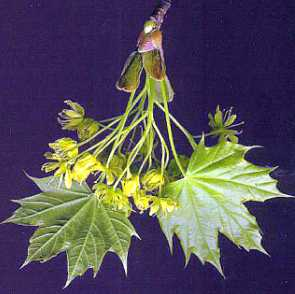
Érable plane, mars 2011 Acer pseudoplatanus
Achillea millefolium
Achillea ptarmica
Actaea spicata
Adansonia digitata
Adonis aestivalis
Adonis annua
Adoxa moschatellina
Aegonychon purpurocaeruleum
Aegopodium podagraria
Aesculus hippocastanum
Aethusa cynapium
Agrimonia eupatoria
Agrimonia procera
Agrostemma githago
Ailanthus altissima
Ajuga genevensis
Ajuga reptans
Alisma lanceolatum
Alisma plantago-aquatica
Alliaria petiolata
Allium oleraceum
Allium schoenoprasum
Allium sphaerocephalon
Allium ursinum
Allium vineale
Alnus glutinosa
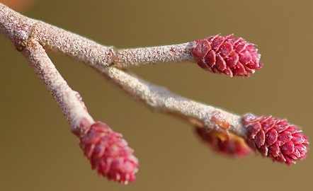
Brienon-sur-Armançon, 20-02-2018
© Daniel Bourget Alopecurus geniculatus
Alopecurus myosuroides
Alopecurus pratensis
Althaea officinalis
Alyssum montanum
Amaranthus retroflexus
Ambrosia artemisiifolia
Amelanchier ovalis
Anacamptis laxiflora
Anacamptis morio
Anacamptis pyramidalis
Anchusa arvensis
Anchusa azurea
Andryala integrifolia
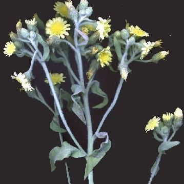
Anemone nemorosa
Anemone ranunculoides
Anemone sylvestris
Angelica sylvestris
Anisantha sterilis
Anomodon viticulosus
Anthemis cotula
Anthericum liliago
Anthericum ramosum
Anthoxanthum odoratum
Anthriscus sylvestris
Anthyllis vulneraria
Apoderus coryli
Aquilegia vulgaris
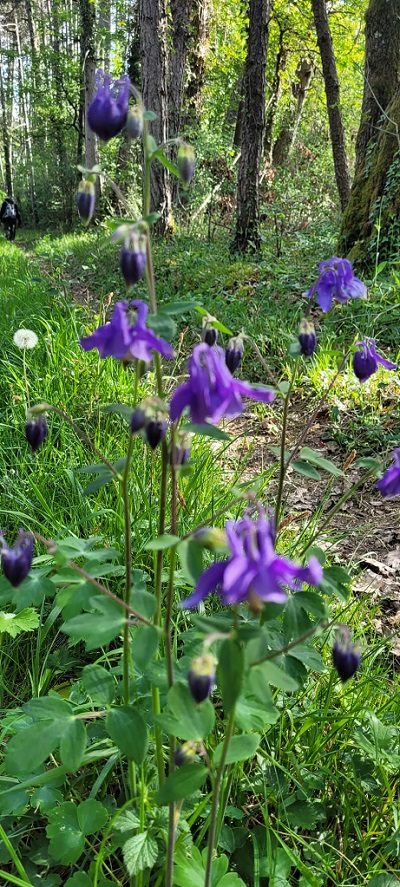
Givry, avril 2026 © Claire Martin-Lucy Arabidopsis arenosa
Arabidopsis arenosa subsp. borbasii
Arabidopsis thaliana
Araucaria araucana
Arctium lappa
Arctium minus
Argentina anserina
Aria edulis
Aria latifolia
Aristolochia clematitis
Arnica montana
Artemisia absinthium
Artemisia vulgaris
Arum italicum
Arum maculatum
Asarum europaeum
Asplenium ceterach
Asplenium ruta-muraria
Asplenium scolopendrium
Asplenium septentrionale
Asplenium trichomanes
Aster amellus
Astragalus glycyphyllos
Athyrium filix-femina
Atocion armeria
Atrichum undulatum
Atriplex hortensis
Atropa belladona
Aubrieta deltoidea
Avena fatua
Avenella flexuosa
B
Noms latins
-
Baldellia ranunculoides
Barbarea vulgaris
Bellis perennis
Berberis vulgaris
Berula erecta
Betonica officinalis
Betula pendula
Bidens cernua
Bidens tripartita
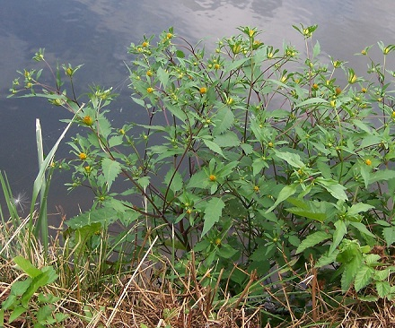
Auxerre, 28 août 2012 Bifora radians
Biscutella laevigata
Bistorta officinalis
Blackstonia perfoliata
Blitum bonus-henricus
Bombycilaena erecta
Borago officinalis
Bougainvillea sp.
Brachypalpus valgus
Brachypodium sylvaticum
Brassica napus
Brassica nigra = Mutarda nigra
Briza media
Bromus hordeaceus
Bryonia cretica subsp. dioica
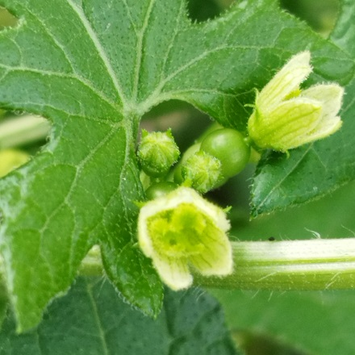
7 mai 2026,
Courbevoie (Hauts-de-Seine) Buglossoides arvensis
Bunias orientalis
Bupleurum falcatum
Bupleurum rotundifolium
Butomus umbellatus
Buxus sempervirens
C
Noms latins
- Calamagrostis epigejos
Calendula arvensis
Calepina irregularis
Callitriche stagnalis
Calluna vulgaris
Caltha palustris
Campanula glomerata
Campanula rapunculus
Campanula rotundifolia
Campanula trachelium
Cannabis sativa
Capsella bursa-pastoris
Cardamine heptaphylla
Cardamine hirsuta
Cardamine impatiens
Cardamine pratensis
Carduus acanthoides
Carduus crispus
Carduus nutans
CAREX sp, avril 2014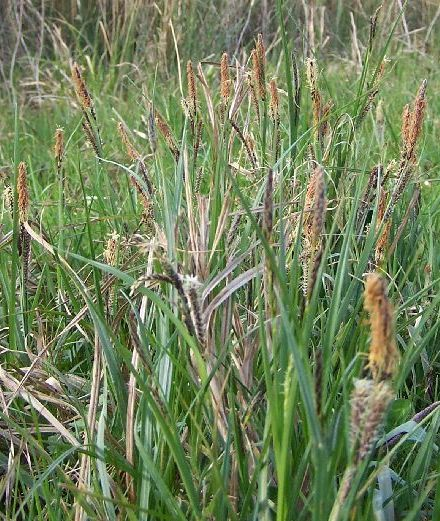
Carex acutiformis
Carex alba
Carex bohemica
Carex caryophyllea
Carex digitata
Carex disticha
Carex divulsa
Carex flacca
Carex halleriana
Carex hirta
Carex leporina
Carex otrubae
Carex pallescens
Carex pendula
Carex pilulifera
Carex sylvatica
Carex tomentosa
Carex vulpina
Carpinus betulus
Carpobrotus sp.
Carthamus lanatus
Carthamus tinctorius
Carya illinoinensis
Castanea sativa
Cedrus atlantica
Centaurea calcitrapa
Centaurea cyanus
Centaurea jacea
Centaurea jacea subsp. angustifolia
Centaurea nigra
Centaurea scabiosa
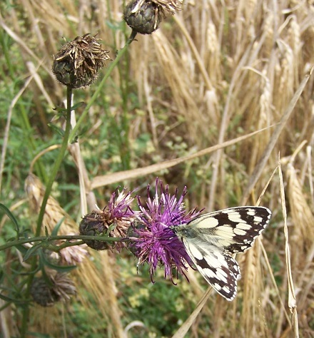
Fleur butinée par Melanargia galathea
Lucy-sur-Cure, 24 juin 2011 Centaurium erythraea
Centaurium pulchellum
Centranthus ruber
Cephalanthera damasonium
Cephalanthera rubra
Cerastium fontanum
Cerastium glomeratum
Cercis siliquastrum
Cervaria rivini
Chaerophyllum temulum
Chelidonium majus
Chenopodiastrum hybridum
Chenopodium album
Chrysosplenium oppositifolium
Cicendia filiformis
Cichorium intybus
Circaea lutetiana
Cirsium acaule
Cirsium arvense
Cirsium eriophorum
Cirsium oleraceum
Cirsium palustre
Cirsium tuberosum
Cirsium vulgare
Clematis vitalba
Clematis viticella
Clinopodium vulgare
Colchicum autumnale
Colutea arborescens
Comarum palustre
Conium maculatum
Convallaria majalis
Convolvulus arvensis
Convolvulus cantabrica
Convolvulus sepium
Cordia sebestena
Cormus domestica
Cornus mas
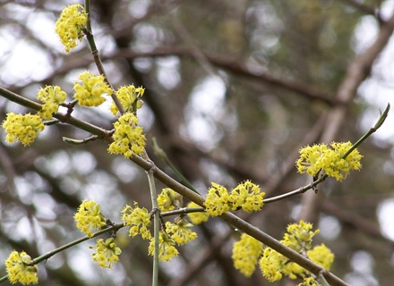
Cornus sanguinea
Coronilla minima
Coronilla varia
Corrigiola littoralis
Corydalis solida
Corylus avellana
Cotyledon tomentosa
Crassula tillaea
Crataegus germanica
Crataegus laevigata
Crataegus monogyna
Crepis capillaris
Crepis sancta
Crocus sativus
Crocus vernus
Cruciata laevipes
Cymbalaria muralis
Cynanchica pyrenaica
Cynoglossum officinale
Cynosurus cristatus
Cytisus scoparius
D
Noms latins
- Dactylis glomerata
Dactylorhiza fuchsii
Dactylorhiza incarnata
Dactylorhiza maculata
Dactylorhiza traunsteineri
Damasonium alisma
Danthonia decumbens
Daphne laureola
Datura stramonium
Daucus carota
Davidia involucrata
Delphinium consolida
Dianthus armeria
Dianthus carthusianorum
Dictamnus albus
Digitalis lutea
Digitalis purpurea
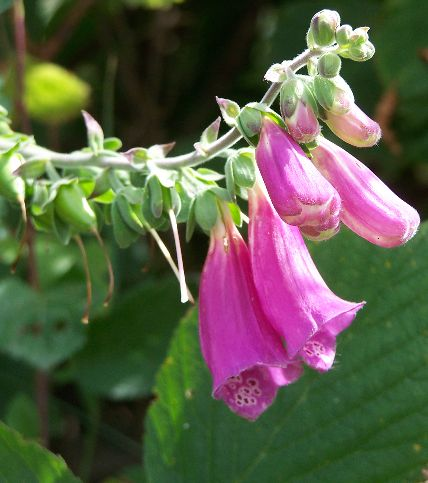
Digitaria ischaemum
Digitaria sanguinalis
Dioscorea communis
Diplolepis rosae
Diplotaxis tenuifolia
Dipsacus fullonum
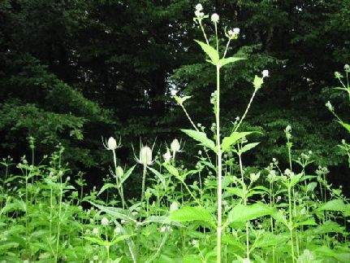
Photo © Jean-Pierre AUDARD Dipsacus pilosus
Doronicum pardalianches
Draba verna
Drosera intermedia
Drosera rotundifolia
Dryopteris affinis
Dryopteris filix-mas
E
Noms latins
-
Echinochloa crus-galli
Echium vulgare
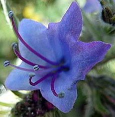
Elatine hexandra
Eleocharis palustris
Epichloe typhina
Epilobium angustifolium
Epilobium hirsutum
Epilobium parviflorum
Epipactis atrorubens
Epipactis helleborine
Epipactis muelleri
Epipactis palustris
Epipactis purpurata
Equisetum arvense
Equisetum hyemale
Equisetum telmateia
Eragrostis minor
Eranthis hyemalis
Erica cinerea
Erica tetralix
Erigeron annuus
Erigeron canadensis
Eriobotrya japonica
Eriophyes tiliae
Eriosoma lanuginosum
Erodium cicutarium
Eryngium campestre
Eryngium maritimum
Erysimum cheiri
Erysimum odoratum
Erythranthe guttata
Eschscholzia californica
Euonymus europaeus
Eupatorium cannabinum
Euphorbia amygdaloides
Euphorbia cyparissias
Euphorbia dulcis
Euphorbia esula subsp. esula
Euphorbia exigua
Euphorbia helioscopia
Euphorbia lathyris
Euphorbia palustris
Euphorbia platyphyllos
Euphorbia seguieriana
Euphorbia verrucosa
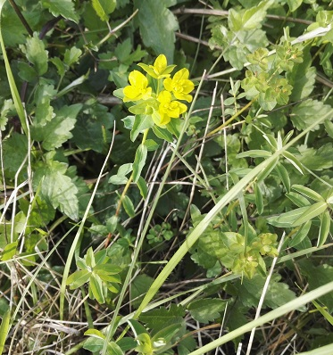
Lucy-sur-Cure, 24 mai 2022 Euphrasia officinalis subsp. pratensis
Euphrasia stricta
Exaculum pusillum
F
Noms latins
-
Fagopyrum esculentum
Fagus sylvatica
Fallopia baldschuanica
Fallopia convolvulus
Filago germanica
Filago pyramidata
Filipendula ulmaria
Foeniculum vulgare
Fomes fomentarius
Fontinalis antipyretica
Fragaria vesca
Fragaria viridis
Frangula alnus
Fraxinus excelsior
Fritillaria meleagris
Fumaria officinalis
Funaria hygrometrica
G
-
Gagea villosa
Galanthus nivalis
Galatella linosyris
Galega officinalis
Galeopsis angustifolia
Galeopsis segetum
Galeopsis tetrahit
Galinsoga quadriradiata
Galium aparine
Galium mollugo
Galium odoratum
Galium palustre
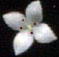
Fleur mesurant 2 mm Galium timeroyi subsp. fleurotii
Galium tricornutum
Galium verum
Genista pilosa
Genista sagittalis
Genista tinctoria
Gentiana cruciata
Gentiana pneumonanthe
Gentianella germanica
Gentianopsis ciliata
Geranium columbinum
Geranium dissectum
Geranium molle
Geranium nodosum
Geranium pyrenaicum
Geranium robertianum
Geranium rotundifolium
Geranium sanguineum
Geum urbanum
Ginkgo biloba
Glebionis segetum
Glechoma hederacea
Globularia bisnagarica
Glyceria maxima
Gnaphalium uliginosum
Gratiola officinalis
Grimmia pulvinata
Gymnadenia conopsea
H
Noms latins
- Hedera helix
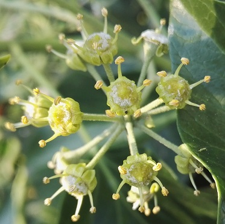
Courbevoie (Hauts-de-Seine), 11-X-2022 Hedychium gardnerianum
Helianthemum apenninum
Helianthemum nummularium
Heliotropium europaeum
Helleborus foetidus
Helminthotheca echioides
Helosciadium nodiflorum
Hepatica nobilis
Heracleum mantegazzianum
Heracleum sphondylium
Hesperis matronalis
Un hieracium
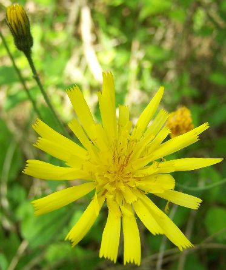
mais lequel ?
Ses micro-espèces, dues à son apomixie,
sont nombreuses.
Hieracium glaucinum
Hieracium sabaudum
Hieracium umbellatum
Himantoglossum hircinum
Hippocrepis comosa
Hippocrepis emerus
Hippuris vulgaris
Holcus lanatus
Holcus mollis
Hordeum murinum
Humulus lupulus
Hyacinthoides non-scripta
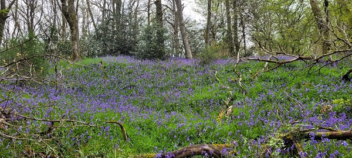
Forêt de Lormes (Nièvre), avril 2025
© Claire Martin-Lucy Hydrocotyle vulgaris
Hygroamblystegium fluviatile
Hylocomiadelphus triquetrus
Hylocomium splendens
Hylotelephium telephium
Hypericum elodes
Hypericum hirsutum
Hypericum humifusum
Hypericum perforatum
Hypericum pulchrum
Hypochaeris radicata
I
Noms latins
- Iberis intermedia
Ilex aquifolium
Impatiens balfourii
Impatiens glandulifera
Impatiens capensis
Inula helenium
Ipheion uniflorum
Iris foetidissima
Iris pseudacorus
J
Noms latins
- Jacobaea erucifolia
Jacobaea paludosa
Jacobaea vulgaris
Jasione montana
Juglans nigra
Juglans regia
Juncus bufonius
Juncus bulbosus
Juncus conglomeratus
Juncus effusus
Juncus tenuis
Juniperus communis
K
Noms latins
L
Noms latins
- Laburnum anagyroides
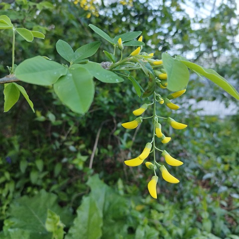
Paris Gare Montparnasse,
Jardin Atlantique, 25 mars 2026 Lactuca muralis
Lactuca perennis
Lactuca serriola
Lactuca virosa
Lagurus ovatus
Lamium album
Lamium galeobdolon
Lamium galeobdolon subsp. argentatum
Lamium maculatum
Lamium purpureum
Lapsana communis
Larix sp.
Laserpitium latifolium
Lathraea clandestina
Lathraea squamaria
Lathyrus aphaca
Lathyrus hirsutus
Lathyrus linifolius
Lathyrus palustris
Lathyrus pratensis
Lathyrus sylvestris
Lathyrus tuberosus
Legousia speculum-veneris
Leontodon hispidus
Leopoldia comosa
Lepidium campestre
Lepidium draba
Leucanthemum vulgare
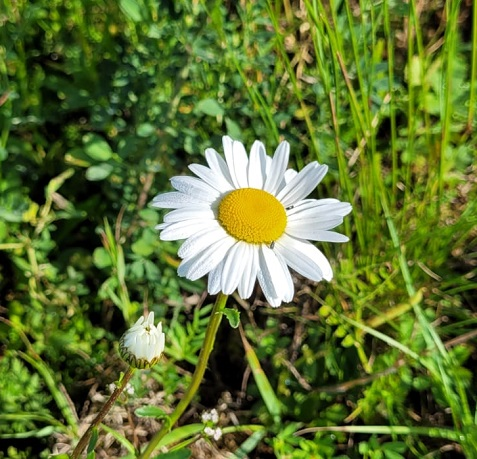
Lucy-le-Bois, mai 2026
© Claire Martin-Lucy Ligustrum vulgare
Limodorum abortivum
Limosella aquatica
Linaria alpina
Linaria repens
Linaria vulgaris
Linum catharticum
Linum leonii
Linum tenuifolium
Linum usitatissimum
Lipandra polysperma
Liposthenes glechomae
Liriodendron tulipifera
Lithospermum officinale
Littorella uniflora
Lobelia urens
Logfia minima
Lolium arundinaceum
Lolium multiflorum
Lolium perenne
Lonicera caprifolium
Lonicera periclymenum
Lonicera xylosteum
Lotus corniculatus
Lotus pedunculatus
Luzula forsteri
Luzula multiflora
Luzula sylvatica
Lycopodiella inundata
Lycopodium annotinum
Lycopus europaeus
Lysimachia arvensis
Lysimachia foemina
Lysimachia nemorum
Lysimachia nummularia
Lysimachia punctata
Lysimachia vulgaris
Lythrum salicaria
M
Noms latins
- Maclura pomifera
Malus sylvestris
Malva alcea
Malva moschata
Malva setigera
Malva sylvestris
Mandragora officinarum
Mangifera indica
Marchantia polymorpha
Matricaria chamomilla
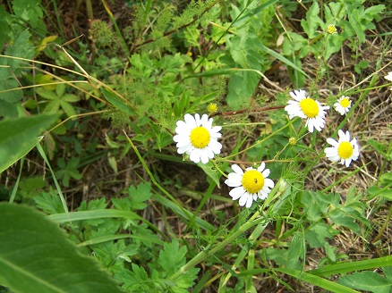
Lucy-sur-Cure, 17 juin 2011 Matricaria discoidea
Medicago arabica
Medicago lupulina
Medicago sativa
Medicago sativa subsp. falcata
Melampyrum arvense
Melampyrum cristatum
Melampyrum pratense
Melica ciliata
Melica nutans
Melica uniflora
Melilotus albus
Melilotus altissimus
Melilotus officinalis
Melittis melissophylum
Mentha aquatica
Mentha arvensis
Mentha pulegium
Mentha suaveolens
Menyanthes trifoliata
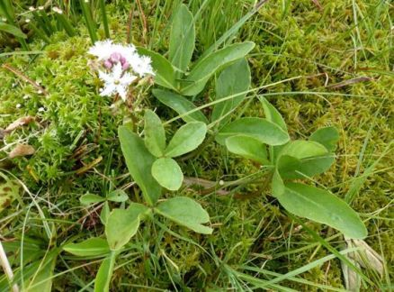
Photo © Jean-Pierre AUDARD Mercurialis annua
Mercurialis perennis
Metasequoia glyptostroboides
Metzgeria furcata
Microthlaspi perfoliatum
Milium effusum
Mimosa pudica
Misopates orontium
Moehringia trinervia
Molinia arundinacea
Molinia caerulea
Muscari botryoides
Muscari comosum
Muscari neglectum
Mutarda arvensis
Mutarda nigra
Myosotis arvensis
Myosotis scorpioides
Myosotis sylvatica
Myrica gale
Myriophyllum spicatum
Myriophyllum verticillatum
N
Noms latins
- Najas marina
Narcissus poeticus
Narcissus pseudonarcissus
Nasturtium officinale
Neotinea ustulata
Neottia nidus-avis
Neottia ovata
Neslia paniculata
Nigella damascena
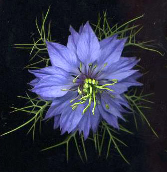
Noccaea montana
Nuphar lutea
Nymphaea alba
Nymphoides peltata
O
Noms latins
- Odontites vernus
Oenanthe fistulosa
Oenanthe silaifolia
Oenothera biennis
Omalotheca sylvatica
Onobrychis viciifolia
Ononis natrix
Ononis spinosa subsp. procurrens
Onopordum acanthium
Ophioglossum vulgatum
Ophrys apifera
Ophrys apifera var. apifera et aurita
Ophrys aranifera
Ophrys fuciflora
Ophrys insectifera
Ophrys virescens
Orchis anthropophora
Orchis mascula
Orchis militaris
Orchis purpurea
Orchis simia
Origanum vulgare
Ornithogalum pyrenaicum
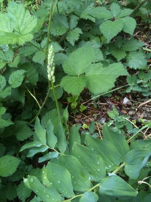
Ornithogalum pyrenaicum
(syn. Loncomelos pyrenaicum),
12-05-2014 - © Claire Martin-Lucy Ornithogalum umbellatum
Ornithopus perpusillus
Orobanche sp.
Orobanche alba
Orobanche alsatica
Orobanche amethystea
Orobanche hederae
Orobanche picridis-hieracioidis
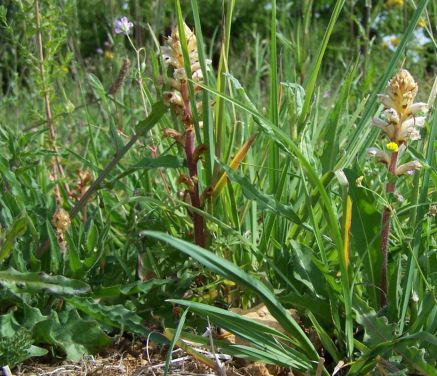
Orobanche rapum-genistae
Orthilia secunda
Osmunda regalis
Oxalis acetosella
Oxalis corniculata
Oxalis stricta
Oxybasis urbica
P
Noms latins
- Paeonia mascula
Papaver dubium
Papaver rhoeas
Papaver somniferum
Parietaria judaica
Paris quadrifolia
Parnassia palustris
Parthenocissus tricuspidata
Pastinaca sativa
Paulownia tomentosa
Pedicularis sylvatica
Dijon, 11 juillet 2010
Pentanema salicinum
Pentanema squarrosum
Persicaria hydropiper
Persicaria lapathifolia
Persicaria maculosa
Petasites hybridus
Petasites pyrenaicus
Petrosedum rupestre
Peucedanum gallicum
Peucedanum oreoselinum
Peucedanum palustre
Phacelia tanacetifolia
Phalaris arundinacea
Phelipanche purpurea
Phleum pratense
Pholcus phalangioides
Phragmites australis
Phyllanthus acidus
Phyteuma orbiculare
Phyteuma spicatum
Phytolacca americana
Picea abies
Picris hieracioides
Pilosella caespitosa
Pilosella officinarum
Pilularia globulifera
Pimpinella saxifraga
Pinus nigra
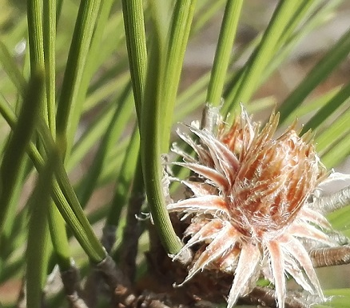
Lucy-sur-Cure, 3 avril 2019 Pinus pinaster
Pinus strobus
Pinus sylvestris
Plagiomnium undulatum
Plantago lanceolata
Plantago major
Plantago media
Platanthera bifolia
Platanthera chlorantha
Platanus x hispanica
Poa annua
Poa nemoralis
Poa trivialis
Polygala amarella
Polygala calcarea
Polygala vulgaris
Polygonatum multiflorum
Polygonatum odoratum
Polygonum aviculare
Polypodium vulgare
Polystichum aculeatum
Polytrichum formosum
Populus alba
Populus tremula
Portulaca oleracea
Potamogeton crispus
Potentilla argentea
Potentilla erecta
Potentilla reptans
Potentilla sterilis
Potentilla verna
Primula x anglica
Primula elatior
Primula veris
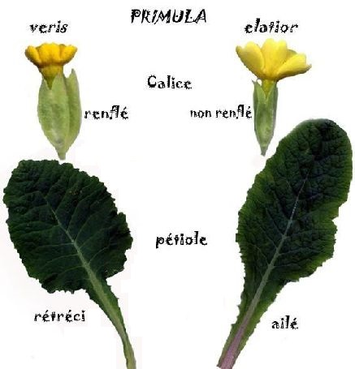
Primula veris et Primula elatior Prospero autumnale
Prostanthera cuneata
Prunella grandiflora
Prunella laciniata
Prunella vulgaris
Prunus avium
Prunus mahaleb
Prunus spinosa
Psammophiliella muralis
Pseudofumaria lutea
Pseudotsuga menziesii
Pteridium aquilinum
Pulicaria dysenterica
Pulmonaria longifolia
Pulsatilla vulgaris
Pyrola chlorantha
Pyrus communis subsp. pyraster
Q
Noms latins
- Quercus ilex
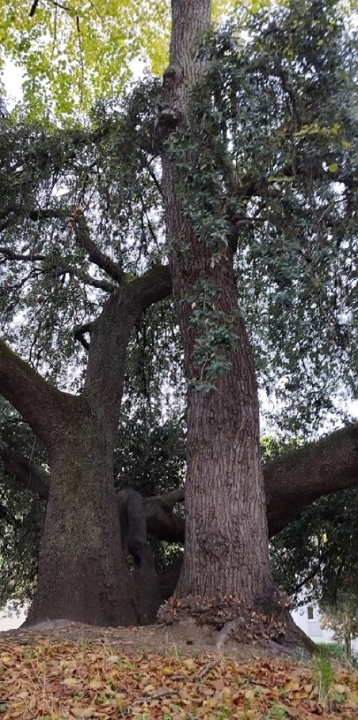
Quercus ilex plus que bicentenaire
Ivry-sur-Seine (Val de Marne), 12 novembre 2026 Quercus macrocarpa
Quercus petraea
Quercus robur
Quercus rubra
Quercus x kerneri
R
Noms latins
- Ramalina farinacea
Ramalina fastigiata
Ramalina fraxinea
Ranunculus aconitifolius
Ranunculus acris
Ranunculus auricomus
Ranunculus bulbosus
Ranunculus ficaria
Ranunculus flammula
Ranunculus fluitans
Ranunculus gramineus
Ranunculus lingua
Ranunculus ophioglossifolius
Ranunculus repens
Ranunculus sardous
Ranunculus sceleratus
Ranunculus trichophyllus
Raphanus raphanistrum
Reseda lutea
Reseda luteola
Reynoutria japonica
Rhamnus cathartica
Rhinanthus alectorolophus
Rhinanthus minor
Rhus typhina
Ribes rubrum
Robinia pseudoacacia
Rorippa amphibia
Rorippa sylvestris
Rosa arvensis
Rosa canina
Rubia peregrina
Rubus caesius
Rubus canescens
Rumex acetosa
Rumex acetosella
Rumex crispus
Rumex obtusifolius
Rumex sanguineus
Ruscus aculeatus
Ruta graveolens
S
Noms latins
- Sabulina tenuifolia
Sagittaria sagittifolia
Salix caprea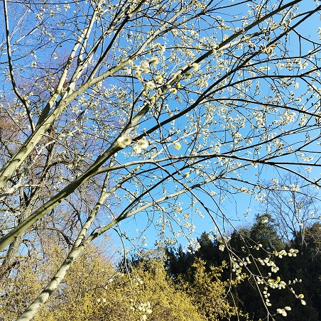
Salix caprea, saule marsault,
Paris, Buttes Chaumont, 3 mars 2026 Salix cinerea
Salix fragilis
Salix purpurea
Salix repens
Salvia pratensis
Sambucus ebulus
Sambucus nigra
Sambucus racemosa
Sanguisorba minor
Sanguisorba officinalis
Sanicula europaea
Saponaria officinalis
Saxifraga granulata
Saxifraga tridactylites
Scabiosa columbaria
Scandix pecten-veneris
Schedonorus arundinaceus
Schoenoplectus lacustris
Schoenus nigricans
Scilla bifolia
Scirpus sylvaticus
Scorzonera humilis
Scrophularia auriculata
Scrophularia nodosa
Scutellaria galericulata
Scytodes thoracica
Sedum acre
Sedum album
Sempervivum tectorum
Senecio inaequidens
Senecio ovatus
Senecio vulgaris
Serratula tinctoria
Seseli montanum
Sesleria caerulea
Setaria viridis
Sherardia arvensis
Silaum silaus
Silene baccifera
Silene dioica
Silene flos-cuculi
Silene latifolia
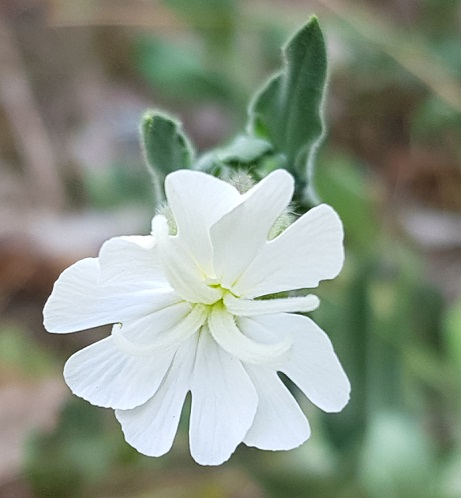
© Claire Martin-Lucy Silene nutans
Silene vulgaris
Silybum marianum
Sison amomum
Sisymbrium irio
Sisymbrium loeselii
Sisymbrium officinale
Solanum dulcamara
Solanum nigrum
Solidago canadensis
Solidago gigantea
Solidago virgaurea
Sonchus arvensis
Sonchus asper
Sonchus oleraceus
Sorbus aucuparia
Sparganium emersum
Sparganium erectum
Spergula arvensis
Spergularia marina
Spergularia rubra
Sphagnum palustre
Spiranthes spiralis
Stachys alpina
Stachys palustris
Stachys recta
Stachys sylvatica
Stellaria alsine
Stellaria graminea
Stellaria holostea
Stellaria media
Stellaria nemorum
Stipa pennata
Struthiopteris spicant
Succisa pratensis
Symphytum officinale
T
Noms latins
- Tanacetum vulgare
Taraxacum campylodes
Taraxacum officinale
Taraxacum udum
Taxus baccata
Tebenna bjerkandrella
Teesdalia nudicaulis
Teucrium botrys
Teucrium chamaedrys
Teucrium montanum
Teucrium scorodonia
Thalictrum flavum
Thelypteris palustris
Theobroma cacao
Thesium humifusum
Paris, 19 septembre 2026
Serres du Jardin du Luxembourg
Thymus praecox
Tilia cordata
Tilia platyphyllos
Cimetière du Montparnasse,
Paris, 14 octobre 2025
Tordylium maximum
Torilis arvensis
Torilis japonica
Torilis nodosa
Tragopogon porrifolius
Tragopogon pratensis
Tragus racemosus
Trifolium arvense
Trifolium campestre
Trifolium dubium
Trifolium fragiferum
Trifolium pratense
Trifolium repens
Trifolium rubens
Trinia glauca
Tripleurospermum inodorum
Tuberaria guttata
Tulipa sylvestris subsp. sylvestris
Tussilago farfara
Typha latifolia
U
Noms latins
V
Noms latins
- Vaccinium myrtillus
Valeriana officinalis
Valerianella locusta
Valerianella locusta f. carinata
Vanilla planifolia
Verbascum blattaria
Verbascum densiflorum
Verbascum lychnitis
Verbascum nigrum
Verbascum pulverulentum
Verbascum thapsus
Verbena officinalis
Veronica agrestis
Veronica anagallis-aquatica
Veronica beccabunga
Veronica chamaedrys
Veronica hederifolia
Veronica montana
Veronica officinalis
Veronica persica
Veronica praecox
Veronica scutellata
Veronica serpyllifolia
Viburnum lantana
Viburnum opulus
Vicia angustifolia
Vicia cracca
Vicia hirsuta
Vicia sativa
Vicia sativa subsp. nigra
Vicia sepium
Vicia tetrasperma
Vicia villosa
Vinca major
Vinca minor
Vincetoxicum hirundinaria
Viola arvensis
Viola cryana
Viola hirta
Viola odorata
Viola palustris
Viola persicifolia
Viola reichenbachiana
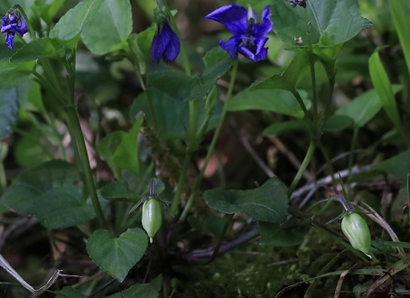
Le Pont Evrat, 20-04-2018
© Daniel Bourget Viola riviniana
Viola tricolor
Viscum album
Vitis vinifera
Vitis vinifera subsp. sylvestris
X
Noms latins
Z
Noms latins
Pour trouver un nom latin :
Noms latinsNoms françaisNoms vernaculairesSynonymesLe genre grammatical en BotaniqueCodes de nomenclature
 | |